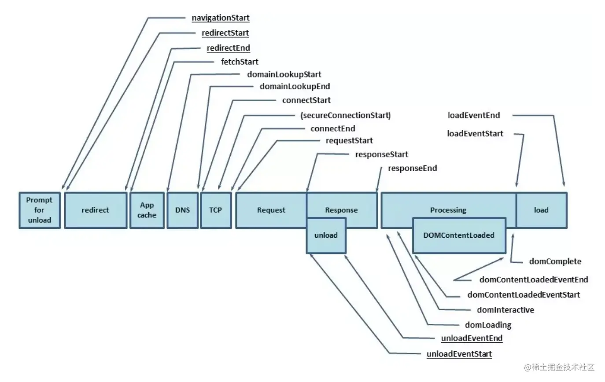
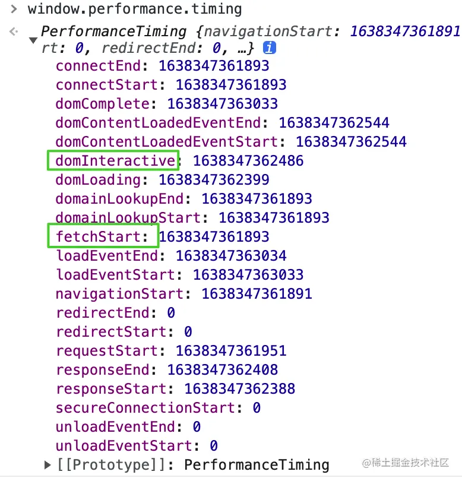

内联元素和块级元素
HTML4中，元素被分成两大类：inline （内联元素）与 block （块级元素）。
- 格式上，默认情况下，行内元素不会以新行开始，而块级元素会新起一行。
- 内容上，默认情况下，行内元素只能包含文本和其他行内元素。而块级元素可以包含行内元素和其他块级元素。
- 行内元素与块级元素属性的不同，主要是盒模型属性上：行内元素设置 width 无效，height 无效（可以设置 line-height），设置 margin 和 padding 的上下不会对其他元素产生影响。
iFrame缺点
- iframe 会阻塞主页面的 onload 事件。window 的 onload 事件需要在所有 iframe 加载完毕后（包含里面的元素）才会触发。在 Safari 和 Chrome 里，通过 JavaScript 动态设置 iframe 的 src 可以避免这种阻塞情况。
- 搜索引擎的检索程序无法解读这种页面，不利于网页的 SEO 。
- iframe 和主页面共享连接池，而浏览器对相同域的连接有限制，所以会影响页面的并行加载。
- 浏览器的后退按钮失效。
- 小型的移动设备无法完全显示框架。
浏览器内核
主要分成两部分：渲染引擎和 JS 引擎。
渲染引擎的职责就是渲染，即在浏览器窗口中显示所请求的内容。默认情况下，渲染引擎可以显示 html、xml 文档及图片，它也可以借助插件（一种浏览器扩展）显示其他类型数据，例如使用 PDF 阅读器插件，可以显示 PDF 格式。
JS 引擎：解析和执行 javascript 来实现网页的动态效果。
最开始渲染引擎和 JS 引擎并没有区分的很明确，后来 JS 引擎越来越独立，内核就倾向于只指渲染引擎。
常见浏览器
Trident：这种浏览器内核是 IE 浏览器用的内核，因为在早期 IE 占有大量的市场份额，所以这种内核比较流行，以前有很多网页也是根据这个内核的标准来编写的，但是实际上这个内核对真正的网页标准支持不是很好。但是由于 IE 的高市场占有率，微软也很长时间没有更新 Trident 内核，就导致了 Trident 内核和 W3C 标准脱节。还有就是 Trident 内核的大量 Bug 等安全问题没有得到解决，加上一些专家学者公开自己认为 IE 浏览器不安全的观点，使很多用户开始转向其他浏览器。
Gecko：这是 Firefox 和 Flock 所采用的内核，这个内核的优点就是功能强大、丰富，可以支持很多复杂网页效果和浏览器扩展接口，但是代价是也显而易见就是要消耗很多的资源，比如内存。
Webkit：Webkit 是 Safari 采用的内核，它的优点就是网页浏览速度较快，虽然不及 Presto 但是也胜于 Gecko 和 Trident，缺点是对于网页代码的容错性不高，也就是说对网页代码的兼容性较低，会使一些编写不标准的网页无法正确显示。WebKit 前身是 KDE 小组的 KHTML 引擎，可以说 WebKit 是 KHTML 的一个开源的分支。
Blink：谷歌在 Chromium Blog 上发表博客，称将与苹果的开源浏览器核心 Webkit 分道扬镳，在 Chromium 项目中研发 Blink 渲染引擎（即浏览器核心），内置于 Chrome 浏览器之中。其实 Blink 引擎就是 Webkit 的一个分支，就像 webkit 是KHTML 的分支一样。Blink 引擎现在是谷歌公司与 Opera >Software 共同研发，上面提到过的，Opera 弃用了自己的 Presto 内核，加入 Google 阵营，跟随谷歌一起研发 Blink
常见浏览器
- IE 浏览器内核：Trident 内核，也是俗称的 IE 内核；
- Chrome 浏览器内核：统称为 Chromium 内核或 Chrome 内核，以前是 Webkit 内核，现在是 Blink内核；
- Firefox 浏览器内核：Gecko 内核，俗称 Firefox 内核；
- Safari 浏览器内核：Webkit 内核；
- Opera 浏览器内核：最初是自己的 Presto 内核，后来加入谷歌大军，从 Webkit 又到了 Blink 内核；
- 360浏览器、猎豹浏览器内核：IE + Chrome 双内核；
- 搜狗、遨游、QQ 浏览器内核：Trident（兼容模式）+ Webkit（高速模式）；
- 百度浏览器、世界之窗内核：IE 内核；
- 2345浏览器内核：好像以前是 IE 内核，现在也是 IE + Chrome 双内核了；
- UC 浏览器内核：这个众口不一，UC 说是他们自己研发的 U3 内核，但好像还是基于 Webkit 和 Trident ，还有说
是基于火狐内核。
DOMContentLoaded事件和Load事件的区别
当初始化的HTML文档被完成加载和解析完成之后，DOMContentLoaded事件被触发，而无需等待图像等外部文件的加载完成。
Load事件是当所有资源加载完成后触发。
如何实现浏览器内多个标签页之前的通信
- 使用WebSocket，通信的标签页连接同一个服务器，由服务器中转
- SharedWorkder(只在chrome浏览器),两个页面共享同一个线程，通过向线程发送数据和接收数据来实现通信
- 可以调用localStorage、cookie等本地存储式式，localStorage另一个
- 如果能够获取对应标签页的引用，也通过postMessage方法
disabled和readyonly的区别
disabled 指当intput元素加载时禁用此元素。input内容不会随表单提交。
readonly规定输入字段为只读。input内容会随着表单提供。
无论设置readonly还是disabled，通过js脚本都能更改input的value
前端性能优化
内容方面:
- 通过文件合并、css雪碧图、base64等方式减少HTTP请求数，避免过多请求造成等待的情况
- 通过DNS缓存等机制来减少DNS的查询次数
- 通过设置缓存策略，对常用不变的资源进行缓存
- 使用延迟加载/按需加载的方式，来减少首屏加时需要的请求的资源。
服务器方面
- 使用CDN服务，来提供用户对资源请求时的响应速度
- 服务端启用Gzip、Deflate等方式对传输的资源进行压缩，减小文件的体积
- 尽可能减小cookie的大小，并且将静态资源分配到其他域名下，来避免对静态资源请求时携带不必要的cookie
CSS/JavaScript方面
- 把样式表放在页面的head标签中，减少页面的首次渲染时间
- 避免使用@import标签
- 尽量把js放在页面底部或使用defer和async属性
- 通过对JavaScript和CSS文件进行压缩，来减小文件的体积
自定义组件
var shadow = this.attachShadow({mode: 'open'});
var div = document.createElement('div');
var style = document.createElement('style');
shadow.appendChild(style);
shadow.appendChild(div);
回调:
- connectedCallback: 当custome element首次被插入文档DOM时，被调用
- disconnectCallback: 当custom element从文档DOM中删除时，被调用
- adoptedCallback: 当custom element被移动到新的文档时，被调用
- attributeChangedCallback: 当custom element增加、删除、修改自身属性时，被调用
url
组成:
- protocol: 协议
- hostname: 主机名
- port: 端口
- pathname: url路径
- search: ?号之后的参数
- hash: #之后台的部分
加载过程:
- 输入地址
- 浏览器查找域名的ip地址
- 浏览器向web服务器发送一个HTTP请求
- 服务器的永久定向响应
- 服务器处理请求
- 服务器返回一个HTTP响应
- 浏览器显示HTML
- 浏览器发送请求获取嵌入在HTML中的资源(图片、音频、视频、CSS、JS等)
移动端显示适配
在Web中，浏览器为我们提供了window.devicePixelRatio来帮助我们dpr(设备像素比), 单位: px/em/rem
页面渲染过程
- 浏览器通过请求得到一个HTML
- 渲染进程解析HTML文本(收到一块14k就开始)，构建DOM树
- 解析HTML的同时，如果遇到内联样式或样式脚本，则下载并构建样式规则(style rules)(阻塞)，若遇到javascript脚本(没有async或defer)会阻塞，则会下载执行脚本
- DOM树和样式规则构建完成后，渲染进程将两者合并成渲染树(render tree)
- 渲染进程开始对渲染树进行布局，生成布局树(layout tree)
- 渲染进程以布局树进行分层，分别栅格化每一层，并得到合成帧
- 渲染进程将合成帧信息发送给GPU进程显示到页面中
等待获取CSS不会阻塞HTML的解析或下载，但是它会阻塞JavaScript，因为JavaScript经常用于查询元素的CSS属性
创建图层的属性和元素: <video>、<canvas>、opacity、3D transform、will-change元素等
加载检测方法
- 通过devtools Network的Time可以查找接口耗时，检测接口耗时是否过长，请求资源是否过多
- 使用devtools的Performance进行性能分析
MVC、MVP、MVVM模式
- MVC(Model、View、Control): 用户操作View，View发送指令到Control，完成业务逻辑处理，要求Model处理相应的数据，将处理好的数据发送到View展示。用户也可以直接下发指令到Control，完成业务逻辑处理后，要求Model处理数据再给View来展示。
Model、View、Control三者相互依赖，修改起来要兼顾其他两者，维护较困难，于是出现了MVP。
- MVP(Model、View、Presenter): 用户操作View，View发送指令到Presenter，完成业务逻辑后，要求Model处理数据，将处理好的数据返回到Presenter，Presenter将数据发给View来展示
View和Model不再相互依赖，使代码耦合降低。但由于Presenter和View相互依赖，Presenter没办法单独做单元测试。所以对View分割一部分叫View接口，Presenter只依赖View接口，增加了复用性。
MVP中因为Presenter发送数据到View展示，仍需要大量代码，无法自动更新，于是出现了MVVM。
- MVVM(Model、View、ViewModel): 用户操作View，ViewModel监听到View的变化，会通知Model中相应的方法进行业务逻辑和数据处理，处理完毕后，ViewModel会监听到自动让View做相应的更新。
Vue项目中，new Vue()就是一个ViewModel，View是template模板。Model就是Vue的选项如data、methods等。
Web项目架构简介
- 经典三层架构模式
- 表示层(User Interface, UI)
- 业务逻辑层(Business Logic Layer, BLL)
- 数据访问层(Data Access Layer, DAL)
- 工厂模式
- 定义: 定义一个创建产品对象的工厂接口，将产品对象的实际创建工作推迟到具体子工厂类当中。达到"创建与使用相分离"。
- 优点: 工厂类包含必要的逻辑判断，可以决定在什么时候创建哪个产品的实例;客户端无须知道具体产品类型，只需知道参数即可;可引入配置文件，在不修改客户端代码的情况下更换和添加新的具体产品。
- 缺点: 简单工厂模式的工厂类单一，负责创建所有产品，职责过重，违背高聚合原则;使用简单工厂模式会增加系统中类的数量(引入新的工厂类);系统扩展困难，一旦增加新产品，就不得不修改工厂逻辑;简单工厂模式使用static工厂方法，造成工厂角色无法形成基于继承的等级结构。
- 应用场景:
- 简单工厂模式:
- 简单工厂(SimpleFactory): 是简单工厂模式的核心，负责创建所有实例的内部逻辑。工厂类的创建产品类的方法可以被外界直接调用，创建所需的产品对象。
- 抽象产品(Product): 是简单工厂创建的所有对象的父类，负责描述所有实例共有的公共接口
- 具体产品(ConcreteProduct): 是简单工厂模式的创建目标。
- 工厂模式:
- 抽象工厂(AbstractFactory): 提供创建产品的接口，调用者通过它访问具体工厂的工厂方法newProduct()来创建产品
- 具体工厂(ConcreteFactory): 主要是实现抽象工厂中的抽象方法，完成具体产品的创建
- 抽象产品(Product): 定义了产品的规范，描述了产品的主要特性和功能
- 具体产品(ConcreteProduct): 实现了抽象产品角色定义的接口，由具体工厂创建，与具体工厂一一对应。
- 抽象工厂模式:
- 抽象工厂(AbstractFactory): 提供了创建产品的接口，包含多个创建产品的方法newProduct(),可以创建多不不同等级的产品
- 具体工厂(ConcreteFactory): 主要是实现抽象工厂中的多个抽象方法，完成具体产品的创建
- 抽象产品(Product): 定义了产品的规范，描述了产品的主要特性和功能,抽象工厂模式有多个抽象产品。
- 具体产品(ConcreteProduct): 实现了抽象产品角色定义的接口，由具体工厂创建，与具体工厂是多对一的关系。
监控页面性能
Performance接口可以获取到当前页面中与性能相关的信息。

字段含义
- navigationStart: 同一个浏览器上一个页面卸载结束时的时间戳。如果没有上一个页面，该值与fetchStart相同
- redirectStart: 第一个HTTP重定向开始的时间戳，如果没有重定向，或者重定向到一个不同源的话，那么该值返回为0
- redirectEnd: 最后一个HTTP重定向完成时的时间戳。如果没有重定向，或者重定向到一个不同源的话，那么该值返回为0
- fetchStart: 浏览器准备好使用HTTP请求抓取文档的时间(发生在检查本地缓存之前)
- domainLookupStart: DNS域名查询开始的时间，如果使用了本地缓存或持久链接，该值则与fetchStart值相同
- domainLookupEnd: DNS域名查询完成的时间，如果使用了本地缓存或持久链接，该值则与fetchStart值相同
- connectStart: HTTP开始建立连接的时间，如果是持久链接的话，该值则和fetchStart值相同，如果在传输层发生了错误且需要重新建立连接的话，那么这里显示的新建立的链接开始时间
- secureConnectionStart: HTTPS连接开始的时间，如果不是安全连接，则值为0
- connectEnd: HTTP完成建立连接的时间(完成握手)。如果是持久链接的话，该值则和fetchStart值相同，如果在传输层发生了错误且需要重新建立链接的话，那么这里显示的是新建立的链接完成时间
- requestStart: HTTP请求读取真实文档开始的时间，包括从本地读取缓存，链接错误重连时。
- responseStart: 开始接收到响应的时间(获取到第一个字节的那个时候)。包括从本地读取缓存
- responseEnd: HTTP响应全部接收完成的时间(获取到最后一个字节)。包括从本地选取缓存
- unloadEventStart: 前一个网页(和当前页面同域)unload的时间戳，如果没有前一个网页或前一个网页是不同域的话，那么该值为0
- unloadEventEnd: 和unloadEventStart相对应，返回是前一个网页unload事件绑定的回调函数执行完毕的时间戳
- domLoading: 开始解析渲染DOM树的时间
- domInteractive: 完成解析DOM树的时间(只是DOM树解析完成，但是并没有开始加载网页的资源)
- domContentLoadedEventStart: DOM解析完成后，网页内资源加载开始的时间
- domConrentLoadedEventEnd: DOM解析完成后，网页内资源加载完成的时间
- domComplete: DOM树解析完成，且资源也准备就绪的时间。Document.readyState变为complete，并将抛出readystatechange相关事件
- loadEventStart: load事件发送给文档。也即load回调函数开始执行的时间，如果没有绑定load事件，则该值为0
- loadEventEnd: laod事件的回调函数执行完毕的时间，如果没有绑定load事件，该值为0
Performance.timing属性

白屏时间: domInteractive-fetchStart
首屏时间: domContentLoadedEventEnd-fetchStart